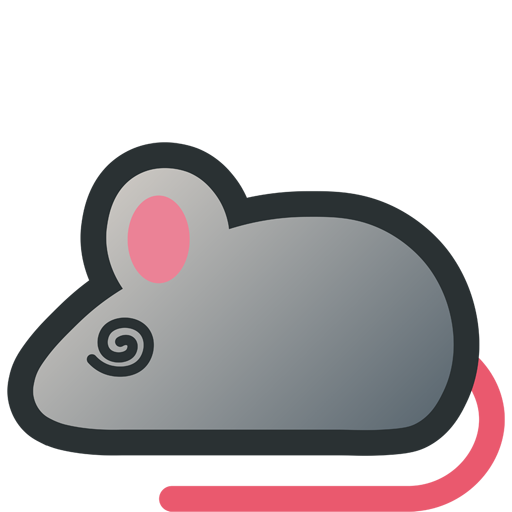

A native Windows 11 mouse-activity utility built with WinUI 3 (Windows App SDK) and .NET 8. It runs in one of two modes on a custom timer:
Auto click — clicks at wherever the cursor currently is without moving it. Great for repetitive clicking tasks, keeping certain applications active, or automating simple interactions.
Spin mode — sweeps the cursor around a tiny circle and returns it to the exact starting pixel, without clicking. Useful for keeping a machine from going idle/locking/sleeping.
Release notes
MouseUtil 1.2.2 Latest
- Fixed timer drift – actions fired slightly less often than the configured interval, with the gap growing the longer the automation ran, especially over long sessions.
- Fixed a smaller residual drift specific to Spin mode, where the spin animation's own duration was silently added on top of each interval instead of counting toward it.
- The installer's window title bar now displays "MouseUtil" instead of "MouseUtil version 1.x.x".
- The installer now has a Welcome screen, showing the version number there instead.